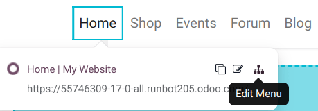

Menu adalah peta bagi pengunjung website Anda. Di Odoo, Anda bisa mengakses Menu Editor dengan cara:
- Klik menu Site > Menu Editor di mode Edit.
- Atau klik Edit, lalu klik ikon Edit Menu pada navbar.
Di sini Anda bisa:
- Rename: Mengubah nama menu.
- Delete: Menghapus menu yang tidak perlu.
- Move: Geser posisi menu dengan drag-and-drop.

📸 Screenshot: Tombol Edit Menu